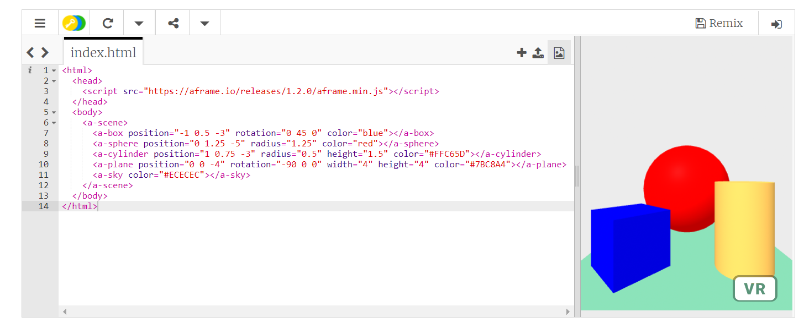
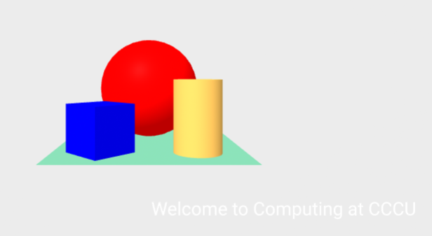

Web-based VR
Let's start
Load in the following https://trinket.io/embed/html/850a678202
Now replace the code with the following or for a quick fix copy the code from https://bit.ly/AframeIntro:
<html>
<head>
<script src="https://aframe.io/releases/1.2.0/aframe.min.js"></script>
</head>
<body>
<a-scene>
<a-box position="-1 0.5 -3" rotation="0 45 0" color="blue"></a-box>
<a-sphere position="0 1.25 -5" radius="1.25" color="red"></a-sphere>
<a-cylinder position="1 0.75 -3" radius="0.5"
height="1.5" color="#FFC65D"></a-cylinder>
<a-plane position="0 0 -4" rotation="-90 0 0"
width="4" height="4" color="#7BC8A4"></a-plane>
<a-sky color="#ECECEC"></a-sky>
</a-scene>
</body>
</html>
You should now see something that looks like:

Click on the the image on screen and play with using the arrow keys and dragging a mouse around. What is the difference between using the arrow keys and the mouse?
Okay now we are going to add some text.
Insert the line:
<a-text value="Welcome to Computing at CCCU"></a-text>
Can you see it? You will need to use the arrow keys to see and even it is difficult - white writing on a grey background.

So let us make it a bit easier to see by change the code slight and specify the text colour as black:
<a-text value="Welcome to Computing at CCCU" color="black"></a-text>
Challenge
-
Look through the course material and find a module that interest you and change the message so it welcome people to that module.
-
Experiment with repositioning any of the objects including the text, you may have noticed that some of the objects had a
position=in their 'coding'; try changing some numbers within one of these, one and at time and work out how they work. -
There are a number of different objects we can put into the scene some of these are listed within the left-hand menu of
<https://bit.ly/AframeIntro>under the headingPrimitives. Try a few out for yourself.
Try it out
<html>
<head>
<script src="https://aframe.io/releases/1.2.0/aframe.min.js"></script>
</head>
<body>
<a-scene>
<a-box position="-1 0.5 -3" rotation="0 45 0" color="blue"></a-box>
<a-sphere position="0 1.25 -5" radius="1.25" color="red"></a-sphere>
<a-cylinder position="1 0.75 -3" radius="0.5"
height="1.5" color="#FFC65D"></a-cylinder>
<a-plane position="0 0 -4" rotation="-90 0 0"
width="4" height="4" color="#7BC8A4"></a-plane>
<a-sky color="#ECECEC"></a-sky>
<a-text position="-2 2 -3"
animation="property: rotation; to: 0 360 0; loop: true; dur: 10000"
value="Welcome to Computing at CCCU" color="black">
</a-text>
</a-scene>
</body>
</html>